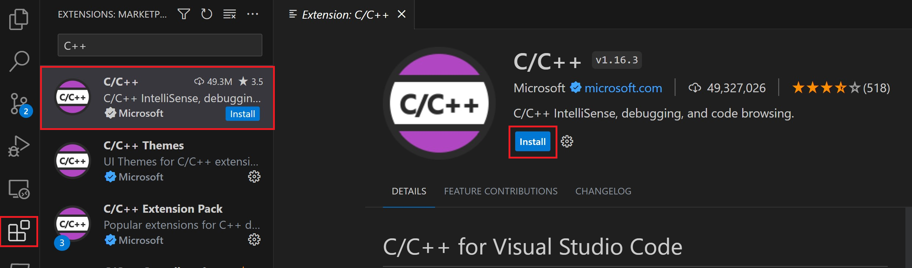

先在全新開啟的 PowerShell 或 VS Code 終端機執行 g++ --version 與 gdb --version。任一個找不到，就先回 00B · Windows 安裝；不要急著改 JSON。
VS Code 不是 compiler：三樣東西缺一不可
| 元件 | 負責什麼 | 怎麼驗收 |
|---|---|---|
| VS Code | 編輯器與工作區介面 | 能以「檔案 → 開啟資料夾」進入專案 |
| Microsoft C/C++ extension | IntelliSense、錯誤定位、GDB 介面 | Extensions 搜尋 @id:ms-vscode.cpptools |
| g++ 與 gdb | 真正編譯程式與執行除錯 | g++ --version、gdb --version |
若 where.exe 列出多筆，先記下你要使用的第一筆。後面的三份 JSON 必須指向同一個 bin 資料夾，不能讓 IntelliSense 用 A、編譯用 B、除錯又用 C。

Code Runner 常只編譯目前這一檔，容易漏掉其他 .cpp、執行參數與 linker flags。它可以留著，但本頁統一使用終端機、Ctrl + Shift + B 與 F5。
解壓縮後，開啟「整個資料夾」
在 VS Code 選「檔案 → 開啟資料夾」，選到能同時看到主程式、標頭檔、其他來源檔與測試資料的那一層。不要只在檔案總管雙擊一支 .cpp。
${workspaceFolder} 就是你開啟的這一層。之後把編譯輸出、執行時的 cwd 和資料檔位置都綁在這裡，換電腦後才不用重改一堆絕對路徑。
程式裡 include 標頭；命令列決定哪些 .cpp 要一起編譯
#include <iostream> // std::cout
#include <vector> // std::vector
#include <fstream> // std::ifstream
#include <algorithm> // std::sort
#include "MyClass.h" // 自己的類別宣告
int main() {
MyClass item;
std::cout << item.value() << '\n';
}| 看到的專案模式 | 程式內怎麼寫 | 編譯命令怎麼列 |
|---|---|---|
一般 .h + .cpp | #include "MyClass.h" | 明列 main.cpp MyClass.cpp |
教師提供的入口檔已 include 支援 .cpp | 先保留模板，不要自行重複 include | 不要再次列出已被 include 的同一支 .cpp |
| 標頭在子資料夾 | #include "dscpp/stack.hpp" | 加入正確的 -I 搜尋路徑 |
bits/stdc++.h 不是標準 C++，會掩蓋漏 include；而 MSYS2 現行工具鏈不保證替 *.cpp 展開檔名。請明列本次需要的來源檔。若出現 multiple definition，先檢查某支 .cpp 是否既被 include、又被列進編譯命令。
先在終端機成功，再把同一條命令搬進 tasks.json
情境 A：只有一支主程式
情境 B：主程式 + 自己的實作檔
情境 C：程式要讀命令列參數與資料檔
情境 D：課程曾用過 Windows 圖形 linker
g++ ... -o main.exe 只負責產生程式；.\main.exe ... 才是真正執行。改完程式後要重新編譯，舊的 .exe 不會自動更新。
三份 JSON 各做一件事：路徑要一起換
在專案根目錄建立 .vscode 資料夾與下面三個檔案。範例使用 MSYS2 預設路徑；若你用 WinLibs，就把三處 C:/msys64/ucrt64/bin 一起換成實際含 g++.exe／gdb.exe 的資料夾，例如 C:/mingw64/bin。JSON 建議使用正斜線 /，可避免反斜線跳脫。
1. tasks.json：真正送給 g++ 的編譯命令
{
"version": "2.0.0",
"tasks": [
{
"type": "cppbuild",
"label": "C/C++: build course program",
"command": "C:/msys64/ucrt64/bin/g++.exe",
"args": [
"-fdiagnostics-color=always",
"-std=c++17",
"-Wall",
"-Wextra",
"-g",
"-I.",
"${workspaceFolder}/main.cpp",
"${workspaceFolder}/MyClass.cpp",
"-o",
"${workspaceFolder}/main.exe"
],
"options": {
"cwd": "${workspaceFolder}"
},
"problemMatcher": ["$gcc"],
"group": {
"kind": "build",
"isDefault": true
}
}
]
}
把 main.cpp、MyClass.cpp 換成本次真的要編譯的檔案；不需要的就刪掉。要加 -O2、-lgdi32 也加在 args，每個參數各占一個字串。
2. launch.json：F5 要執行哪支程式、帶什麼參數
{
"version": "0.2.0",
"configurations": [
{
"name": "Debug course program",
"type": "cppdbg",
"request": "launch",
"program": "${workspaceFolder}/main.exe",
"args": ["input.txt", "--nogui"],
"stopAtEntry": false,
"cwd": "${workspaceFolder}",
"environment": [],
"externalConsole": false,
"MIMode": "gdb",
"miDebuggerPath": "C:/msys64/ucrt64/bin/gdb.exe",
"setupCommands": [
{
"description": "Enable pretty-printing for gdb",
"text": "-enable-pretty-printing",
"ignoreFailures": true
}
],
"preLaunchTask": "C/C++: build course program"
}
]
}
沒有命令列參數就把 args 改成空陣列 []。cwd 是程式尋找 input.txt 等相對路徑資料檔的起點；preLaunchTask 必須和 tasks.json 的 label 完全相同。
3. c_cpp_properties.json：IntelliSense 的 compiler 與標頭路徑
{
"configurations": [
{
"name": "Windows GCC",
"compilerPath": "C:/msys64/ucrt64/bin/g++.exe",
"includePath": ["${workspaceFolder}/**"],
"cStandard": "c17",
"cppStandard": "c++17",
"intelliSenseMode": "windows-gcc-x64"
}
],
"version": 4
}
c_cpp_properties.json 只影響 IntelliSense；真正能不能生出 .exe 由 tasks.json 的 g++ 命令決定。若 Ctrl+Shift+B 成功但編輯器仍畫紅線，才回來檢查 compilerPath 與 includePath。

先停在一行，再看變數怎麼變
- 按
Ctrl + Shift + B，確認先能成功產生main.exe。 - 在想暫停的行號左邊點一下，出現紅點；快捷鍵是 F9。
- 按 F5。VS Code 先執行
preLaunchTask重新編譯，再交給 GDB。 - 停住後看左側 Variables；想持續追蹤的運算式加到 Watch。
- 用 F10 跑過目前這行、F11 進入函式；Call Stack 顯示函式是從哪裡呼叫進來的。

除錯版必須用 -g。學習與除錯時先不要加高等級最佳化；-O2 可能重排或消除變數。若作業執行本身要求 -O2，可另外保留一個 release build task。
看到哪一句，就先查哪一層
| 症狀 | 最可能原因 | 先做什麼 |
|---|---|---|
g++ is not recognized | Path 未加入或 VS Code 沒重開 | 回 00B，重跑 where.exe g++ |
miDebuggerPath is invalid | 沒裝 gdb，或 launch.json 指錯工具鏈 | where.exe gdb 後貼入完整路徑 |
No such file or directory 指向 header | include 名稱、資料夾或 -I 錯 | 先確認檔案真的存在，再查大小寫與搜尋路徑 |
undefined reference | 宣告看得到，但實作的 .cpp 沒被編譯 | 把正確實作檔加入 tasks.json 的 args |
multiple definition | 同一支 .cpp 既被 include 又被另外編譯 | 保留一次；先照教師提供的模板判斷入口檔 |
程式說找不到 input.txt | cwd 不是資料檔所在資料夾 | 把 launch.json 的 cwd 設為 workspace |
| 編得過但畫面仍有紅線 | IntelliSense 用了不同 compiler／includePath | 檢查 c_cpp_properties.json，不要亂抄系統 include |
七項都做到，才算環境完成
g++ --version 與 gdb --version 都成功。Ctrl + Shift + B 能編譯多檔並產生預期的 .exe。.\main.exe 能得到正確輸出。每次先讀清楚資料夾裡有哪些入口檔、實作檔與既有 include，再從本頁 JSON 複製一份到該作業的 .vscode/；只替換工具鏈路徑、來源檔、輸出檔、執行參數與 linker flags。
需要查細節時，回到官方文件
| 資源 | 用途 |
|---|---|
| C/C++ for Visual Studio Code | 確認 extension、compiler 與 debugger 的分工。 |
| Using GCC with MinGW | MSYS2、Path、tasks.json、launch.json 與官方操作圖。 |
| C++ extension settings | compilerPath、includePath 與 IntelliSense 設定。 |
| Debug C++ in VS Code | GDB、miDebuggerPath 與除錯面板。 |
關鍵詞彙卡：點卡片翻面
這八個詞能講清楚，就不會再把「編輯器紅線」「compiler 錯誤」與「linker 錯誤」混成一件事。